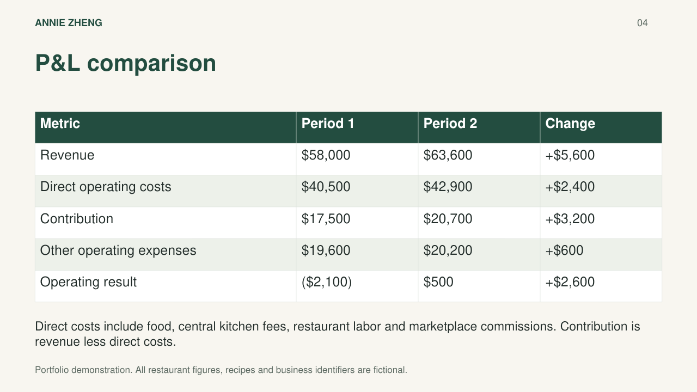
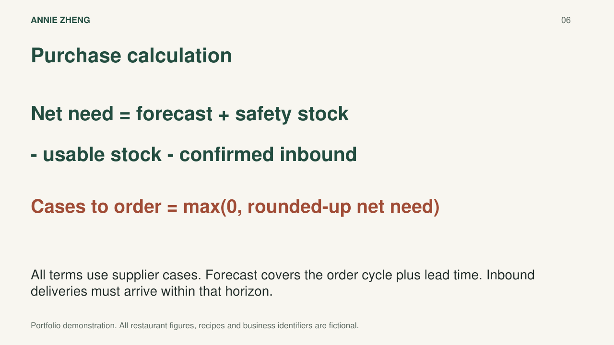

01 / Management reporting
Monthly P&L reporting
I organized transaction exports into monthly P&Ls so managers could see which costs were affecting profitability.
Explore projectFinance · Research · Business · Operations
I’m Annie Zheng, a Boston University graduate with a finance concentration. During my internship at Sweet Bamboo, I built monthly P&L reports and an inventory planning workflow. Here are those projects, along with my channel analysis and company valuation studies.
Selected projects
Start with a project summary, then open the presentation or workbook to see the analysis in more detail.

I organized transaction exports into monthly P&Ls so managers could see which costs were affecting profitability.
Explore project
I used daily POS reports and menu mappings to estimate ingredient usage and support biweekly ordering.
Explore project
I compared direct-order and delivery scenarios to see how avoided fees and additional costs affect the potential savings.
Explore project


I built operating forecasts and compared DCF and valuation multiples for Starbucks, Colgate-Palmolive and Costco.
Explore projectAbout my work
I’m interested in finance, research and business or operations analyst roles. I enjoy figuring out what drives financial performance, how assumptions affect a forecast, and whether the numbers tell a convincing story about a business. I’m especially interested in FP&A and investment research. At Sweet Bamboo, I turned transaction data into monthly P&Ls that managers could use to understand revenue, costs and profitability. I also built inventory and purchasing analyses to support planning decisions. My valuation projects gave me a different way to study businesses: building forecasts, testing assumptions and comparing estimated value with market prices. This portfolio shows how I approached each question and where I had to use judgment.